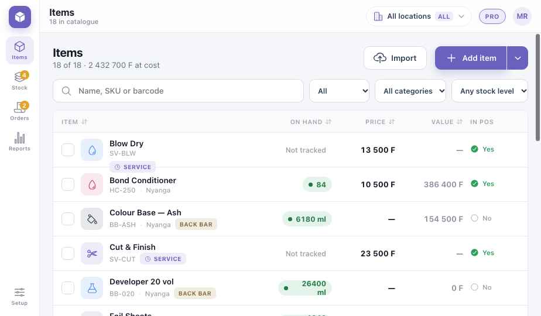
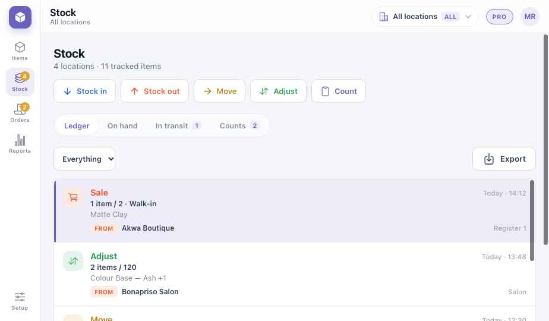
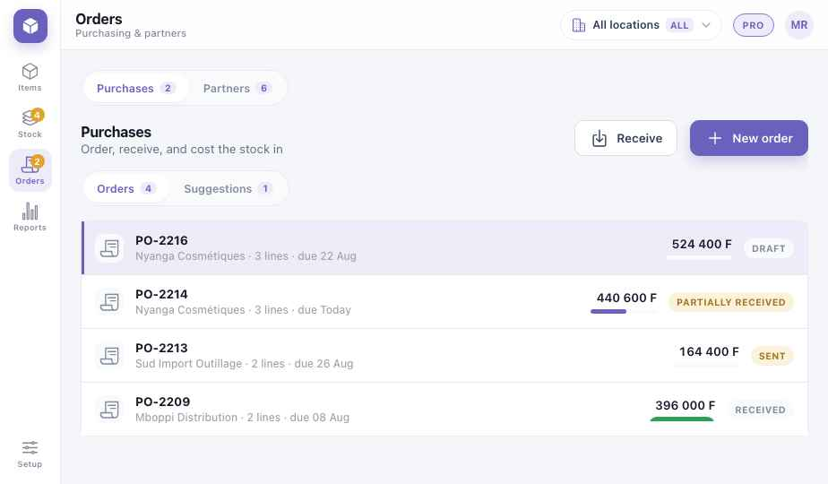
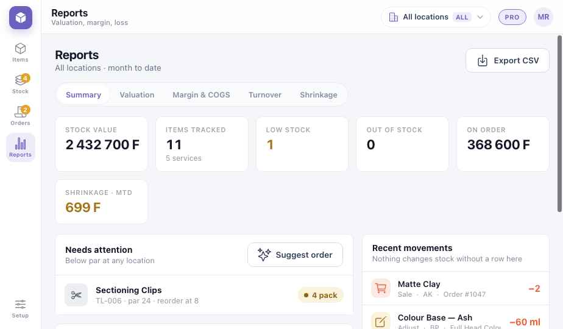

Guide de module
Stock
Un seul catalogue et un seul stock pour chaque module qui vend des articles — la caisse de la boutique, le bar, les produits techniques du salon, le bar à jus de la salle de sport. Chaque changement laisse une ligne lisible. Les chapitres communs sont dans les chapitres Plateforme ; comment les modules alimentent le stock est en P7.
Les captures montrent la version anglaise du prototype. Les boutons sont donnés en français, avec le libellé anglais entre parenthèses quand c'est utile.
Stock · Partie 1
Est-ce pour moi ?
Activez le Stock quand vous voulez savoir ce que vous avez, ce que vous avez vendu et ce qui a disparu. Sans lui, la caisse vend quand même ; avec lui, chaque vente retire du stock.
Boutiques et pharmacies
Quantité par article, réassort avant le rayon vide, lots et péremption.
Bars et restaurants
Casiers et bouteilles ; plats qui consomment des ingrédients. Commencez par les boissons.
Salons et salles de sport
Produits revendus, et couleur ou jus consommés en cabine ou au bar.
Ce que vous avez à chaque niveau
LiteSavoir ce que vous avez
- Articles : un seul catalogue
- Quantité par article
- Journal : chaque entrée et sortie
MidNe jamais manquer
- Seuils et liste « à commander »
- Répertoire des partenaires : fournisseurs et conditions
- Prestations vendues au temps
FullMaîtriser l'argent en stock
- Bons de commande et réception
- Inventaires avec écarts
- Recettes et lots · péremption · numéros de série
- Valorisation, marge, démarque
- Plusieurs établissements et transferts
Le chemin d'un casier
Suivez la Castel 65 cl d'un bar d'Akwa : une commande reçue, deux caisses qui vendent, une alerte de réassort et l'inventaire du dimanche. Chaque étape laisse une ligne au journal.
Bas · à commander
- Réception · PO-2216 · 2 casiers+48
- Vente · caisse du bar−12
- Vente · téléphone terrasse−20
- Seuil atteint24
- Inventaire · écart−2
- PO-2231 · 2 casiers · envoyé+48 attendus
- Lundi matin : il reste 8 bouteilles. L'article affiche Bas.
- La livraison arrive. Réceptionner contre la commande : +48, et le prix de revient est mis à jour.
- La caisse du bar vend 12 bouteilles. Chaque vente retire du stock aussitôt.
- Le téléphone du serveur en terrasse en vend 20 — le même stock, sans double compte.
- Il en reste 24 : le seuil est franchi, l'article rejoint À commander.
- Inventaire du dimanche : 22 en rayon, pas 24. L'écart est enregistré avec un motif.
- Un geste transforme la suggestion en bon de commande au fournisseur.
Stock · Partie 2
Installation Lite
Commencez par les articles qui comptent le plus — souvent les boissons, ou vos 50 meilleures ventes. Ajoutez le reste ensuite.
- Importez ou ajoutez les articlesArticles → Importer depuis un tableur, ou Ajouter : nom, référence ou code-barres, prix, coût, unité (pièce, casier, ml, kg).
- Choisissez ce qui est suiviSuivez le stock des marchandises ; les prestations et les plats sans recette restent Non suivis.
- Saisissez ce que vous avez aujourd'huiMouvements → Inventaire. Le premier inventaire fixe le stock d'ouverture.
- Fixez les seuilsLe niveau où commander, et le niveau à atteindre. Mid
- Ajoutez les fournisseursCommandes → Partenaires : téléphone, conditions, délai. Mid
- Vendez un article et vérifiezPassez-le en caisse ; le journal affiche la ligne de vente.
Stock · Partie 3
Une semaine de stock
Le stock suit un rythme hebdomadaire, autour des ventes quotidiennes qui se font toutes seules.
| Moment | Ce que vous faites | Écran | Niveau |
|---|---|---|---|
| Chaque vente | Rien. La caisse, le bar ou le salon retire le stock tout seul. | — | Lite |
| Une livraison | Réceptionnez contre la commande ; vérifiez quantités et coûts. | Commandes | Full |
| Sans commande ? Entrée | Notez ce qui est arrivé, de qui, à quel coût. | Mouvements | Lite |
| Casse, cadeau, usage interne | Ajustez avec un motif : cassé, périmé, personnel, cadeau. | Mouvements | Lite |
| Lundi · Commandes | Ouvrez À commander, acceptez la suggestion, envoyez le bon. | Commandes | Mid |
| Dimanche · Inventaire | Comptez un rayon ou tout ; revoyez les écarts ; validez. | Mouvements → Inventaire | Full |
| Fin de mois | Valeur du stock, marge et démarque pour le propriétaire. | Rapports | Full |
Stock · Partie 4
Les écrans
La barre de gauche : Articles (Items), Mouvements (Stock), Commandes (Orders), Rapports (Reports), et Configuration en bas. Les captures montrent une entreprise avec une boutique et un salon, tous établissements confondus.
Articles Lite

1234567- Établissement — une boutique, ou toutes additionnées. Full
- Recherche par nom, référence ou code-barres.
- Filtres — type, catégorie, niveau de stock (bas, épuisé).
- En stock — vert disponible, ambre bas, rouge épuisé. Les prestations affichent Non suivi.
- En caisse — si la caisse peut le vendre. Les produits techniques restent hors caisse.
- Importer depuis un tableur.
- Ajouter un article — marchandise, prestation ou lot.
Mouvements Lite

12345- Entrée, sortie, déplacement, ajustement — chacun demande quoi, combien et pourquoi.
- Inventaire (Count) — un rayon ou toute la boutique. Full
- Journal · En stock · En transit · Inventaires.
- Une ligne par mouvement — quoi, combien, d'où, quelle caisse, quand. Jamais modifiée.
- Exporter pour le comptable.
Commandes Full

123456- Achats et Partenaires — les commandes, et ceux à qui vous achetez. Mid
- Suggestions — ce qui est sous le seuil, prêt à commander.
- Bon de commande — fournisseur, lignes, échéance, montant.
- État — brouillon, envoyé, reçu en partie, reçu.
- Réceptionner (Receive) — cochez ce qui est arrivé ; les manquants restent ouverts.
- Nouvelle commande.
Rapports Full

123456- Synthèse · Valorisation · Marge · Rotation · Démarque.
- Valeur du stock au coût, articles suivis, bas, épuisés, en commande.
- Démarque — ce qui a disparu ce mois-ci, en francs.
- À surveiller — sous l'objectif dans un établissement.
- Suggérer une commande — transforme la liste en brouillon.
- Mouvements récents — rien ne change le stock sans une ligne ici.
Stock · Partie 5
En cas de problème
Un article a été vendu sans avoir été réceptionné. La vente n'est jamais bloquée. Saisissez la livraison oubliée, ou faites un inventaire de l'article.
Revoyez les écarts avant de valider : un gros écart vient souvent d'une livraison non saisie ou d'une vente sur le mauvais article. Validez avec un motif ; le propriétaire le voit dans Démarque.
Ne réceptionnez que ce qui est arrivé. La commande reste Reçue en partie jusqu'au reste, ou jusqu'à ce que vous la clôturiez.
Sortie avec le motif Périmé. Avec le suivi des lots, la caisse prévient avant de vendre un lot à date courte. Full
Les deux ventes restent ; le stock affiche −1 jusqu'à la prochaine livraison ou au prochain inventaire. Rien n'est perdu à la synchronisation.
Stock · Partie 6
Aller plus loin
Recettes et lots Full
Un plat ou un coffret retire ses composants. Commencez par les boissons ; ajoutez les recettes plat par plat.
Lots et péremption Full
Numéro de lot et date de péremption à chaque réception. Pour les pharmacies et l'alimentaire.
Numéros de série Full
Chaque téléphone ou appareil identifié, avec sa garantie.
Plusieurs établissements Full
Un stock par boutique, un seul catalogue. Formule Professional.
Transferts
Déplacer du stock entre boutiques, avec une étape « en transit ». La synchronisation entre sites arrive.
Valorisation et marge Full
Valeur du stock au coût, marge par article, rotation.
À imprimer et afficher
Fiches du personnel
2. Comptez chaque ligne ; saisissez ce qui est arrivé.
3. Vérifiez le coût sur la facture.
4. Il manque ? Laissez ouvert.
2. Comptez ; tapez ce que vous voyez, pas ce que vous attendez.
3. Revoyez les écarts avec le gérant.
4. Validez.
2. Article et quantité.
3. Motif : cassé, périmé, personnel, cadeau.
4. Enregistrez — c'est noté à votre nom.
Guide utilisateur Koomzo · Stock · Version 2 · Les écrans montrés sont ceux du prototype Koomzo actuel. Les noms, articles et prix sont des exemples.